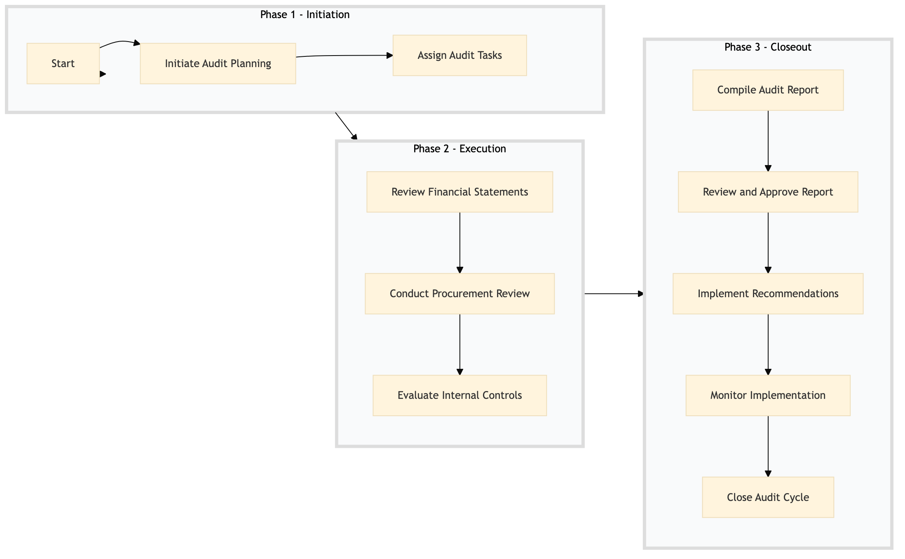

| Role | Steps |
|---|---|
| Finance Manager | 1.1 1.2 3.1 3.2 3.5 |
| Financial Analyst | 2.1 |
| Procurement Manager | 2.2 3.3 |
| Internal Auditor | 2.3 |
| Executive Finance Officer | 3.2 |
| Step | Name | Role | System | Input | Output | KPI | Dec? | Exc? | Pain Point / Risk |
|---|---|---|---|---|---|---|---|---|---|
| 1.1 | Initiate Audit Planning | Finance Manager | Oracle OPERA Cloud, SAP S/4HANA | Audit checklist template | Customized audit plan | Less than 2 hours | N | Y | Dynamic budget changes affecting the scope of the audit |
| 1.2 | Assign Audit Tasks | Finance Manager | Workday HCM, Oracle OPERA Cloud | Customized audit plan | Task assignments to team members | Less than 1 hour | N | Y | Resource allocation and availability |
| 2.1 | Review Financial Statements | Financial Analyst | Oracle OPERA Cloud, SAP S/4HANA | Current financial statements | Analyzed financial report | Less than 8 hours | Y | N | Data accuracy and completeness |
| 2.2 | Conduct Procurement Review | Procurement Manager | Birchstreet Procurement, Oracle OPERA Cloud | Supplier contracts and purchase orders | Procurement compliance report | Less than 10 hours | Y | N | Supplier performance tracking |
| 2.3 | Evaluate Internal Controls | Internal Auditor | Oracle OPERA Cloud, Microsoft Power BI | Analyzed financial report, procurement compliance report | Control evaluation matrix | Less than 6 hours | Y | N | Complexity of internal controls |
| 3.1 | Compile Audit Report | Finance Manager | Microsoft Power BI, Salesforce | Control evaluation matrix | Final audit report with recommendations | Less than 4 hours | N | Y | Data presentation and storytelling |
| 3.2 | Review and Approve Report | Executive Finance Officer | Microsoft Power BI, Salesforce | Final audit report with recommendations | Approved audit report | Less than 1 hour | Y | N | Executive buy-in and alignment |
| 3.3 | Implement Recommendations | Finance Manager, Procurement Manager | Oracle OPERA Cloud, Birchstreet Procurement | Approved audit report | Action plan and implementation status | Less than 2 weeks | N | Y | Resource constraints and prioritization |
| 3.4 | Monitor Implementation | Finance Manager, Procurement Manager | Oracle OPERA Cloud, Birchstreet Procurement | Action plan and implementation status | Implementation progress report | Weekly updates | Y | N | Continuous monitoring and adjustments |
| 3.5 | Close Audit Cycle | Finance Manager | Oracle OPERA Cloud, Microsoft Power BI | Implementation progress report | Audit cycle closure documentation | Less than 1 hour | N | Y | Documentation and record-keeping |
A structured process document for FN-AC-08 Internal Audit & Controls at a Marriott full-service hotel, focusing on Finance and Procurement domain.